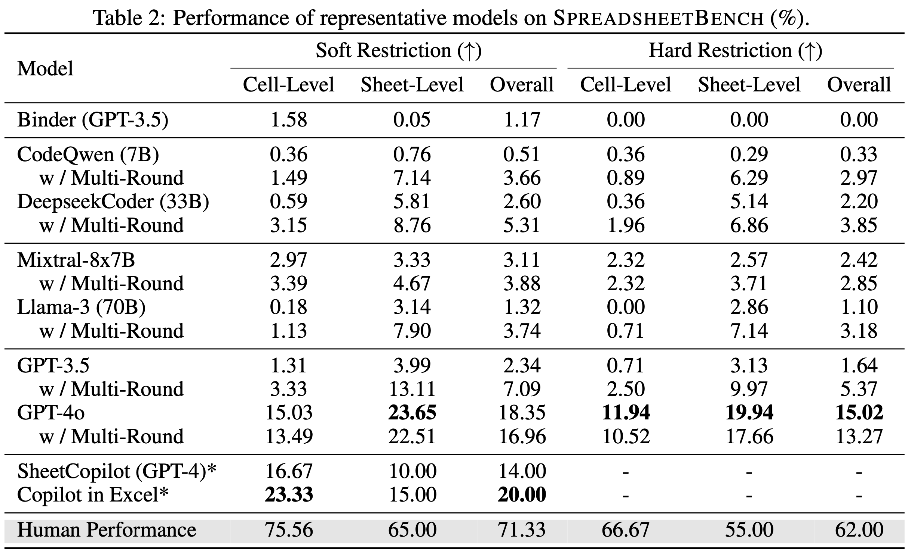

We evaluate LLMs across five categories: (1) TableQA models (e.g., Binder), (2) Open-source code
models (e.g., DeepseekCoder), (3) Open-source general models (e.g., Llama 3), (4) Close-source
models (e.g., GPT-4), and (5) Spreadsheet-specific methods or products (e.g., SheetCopilot).
We evaluate LLMs under two distinct settings: 1. Single Round: In this mode, we present the model
with the initial few rows of spreadsheet files within the prompt, allowing for only one inference.
2. Multi-Round: Building on the single-round prompt setting, we incorporate additional prompt that
utilizes the ReAct technique and code execution feedback to enhance the accuracy of code solutions
produced by LLMs over multi-round conversation.

The results shown in Table 2 indicate that current LLMs and spreadsheet agents are inadequate in
managing complex spreadsheet manipulation tasks as required by real-world scenarios. Even the most
advanced spreadsheet agent, Copilot in Excel, only achieves an accuracy of roughly 20%. GPT-4o, the
SOTA LLM, scores around 17% in accuracy, aligning with Copilot in Excel's performance. Open-source
LLMs significantly underperform compared to the SOTA model, likely due to their limited comprehension
and coding proficiency. Overall, there is a substantial gap between existing LLMs or products and human
performance produced by Excel experts, emphasizing the critical need for advancement in LLMs tailored
for spreadsheet manipulation.